The component
 is defined by
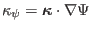. Using Eq. (262),
is written as
is defined by
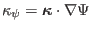. Using Eq. (262),
is written as
| 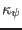 |
 |
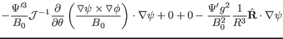 |
|
| |
|
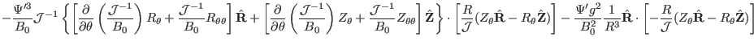 |
|
| |
|
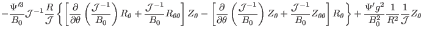 |
|
| |
|
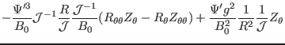 |
|
| |
|
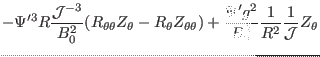 |
(266) |
| |
|
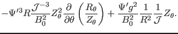 |
(267) |
Equation (266) is used in GTAW code to calculate
.
Equation (267) is not suitable for numerical calculation because
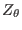, which appears both in numerator and denominator, can be very
small, leading to significant errors in the numerical results. [My notes: the
bad results calculated by Eq. (267) in my code reminded me that Eq.
(266) may be better. I switch back to adopt Eq. (266) and
the results clearly show that the results given by Eq. (266) are
indeed better than those of Eq. (267), as shown in Fig.
30.]
Figure 30:
The normal curvature
calculated by
Eq. (267) (left) and Eq. (266) (right) as a function of
the poloidal angle. The different lines corresponds to different magnetic
surfaces. The stars correspond to the values of
on the
boundary magnetic surface while the plus signs correspond to the value on
the innermost magnetic surface (the magnetic surface adjacent to the
magnetic axis). The equilibrium is a Solovev equilibrium.
| 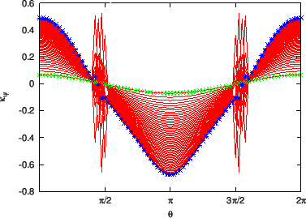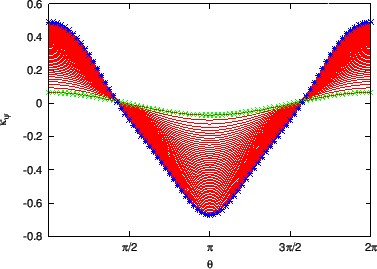 |
yj
2015-09-04